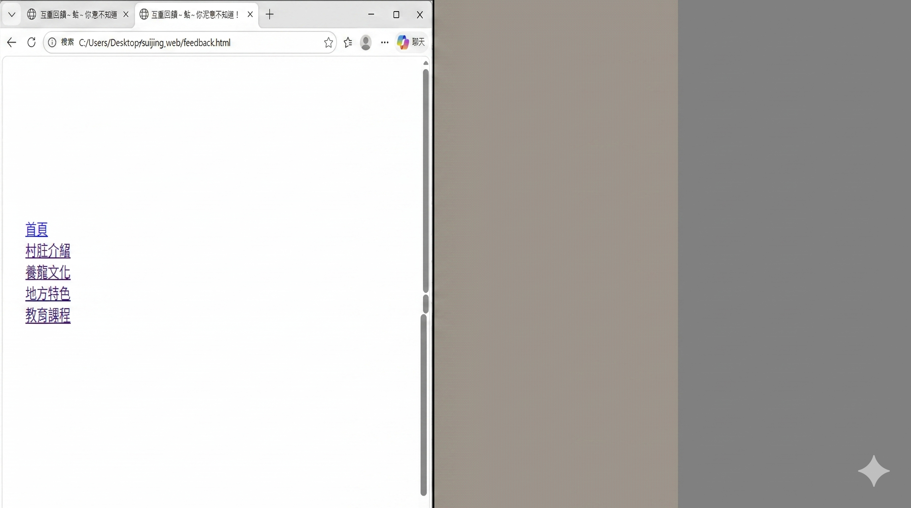

🌸 文化特色與 XR 體驗
結合實體與數位技術，透過中英雙語 VR 與實體掃描 AR，讓在地文化得以傳承。
方案 A：360° VR 虛擬實境導覽
沉浸式體驗水井村的神話與漁塭景觀。
方案 B：AR 現場互動導覽
開啟相機掃描，觸發數位文化內容。
文化特色體驗

結合實體與數位技術，透過中英雙語 VR 與實體掃描 AR，讓在地文化得以傳承。
方案 A：360° VR 虛擬實境導覽
沉浸式體驗水井村的神話與漁塭景觀。
方案 B：AR 現場互動導覽
開啟相機掃描，觸發數位文化內容。